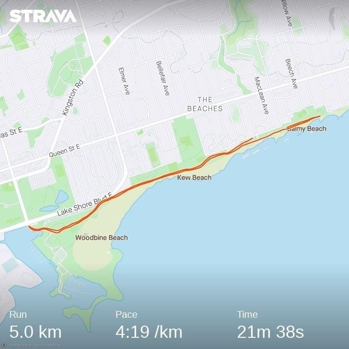

There’s been some shovelling today ❄️
Jan 17, 2022
Jan 17, 2022
Lucy is enjoying all this new snow ❄️
Jan 16, 2022
The Alignment Problem by Brian Christian is a fascinating and very well written overview of the current state of AI research. I was particularly struck by how much of the challenge with safe AI is based on our poor understanding of our own intelligence 📚
Bike sizing 🚴♂️
Jan 15, 2022I’ll be spending many hours and a reasonable amount of money on a bicycle over the next few months. To be efficient, comfortable, and injury free, I want the bike to fit me closely. So, I sought the advice of Scott, a professional bike fitter.
Scott has an interesting contraption that is the various parts of a bike, each adjustable, with which he can recreate any frame geometry. He started out with a Trek Domane as a reference point and had me ride it for a few minutes. Then with an assortment of rulers, protractors, and lasers, he measured me, moved parts, measured again, and optimized the fit. Once the fit was established, he generated a detailed report for me of all the various lengths and angles that I can use to confirm the size of any bike that I find.
I also learned that my tibias are longer than my femurs (not by much) which is not typical (most people have longer femurs). This ends up affecting my optimal bike geometry, since it affects the angle of my knee and hip when at the top of a pedal stroke.
Now that I know what size of bike to get, I’m on the search. The COVID-induced supply chain challenges are definitely affecting availability.
Jan 8, 2022
As a benchmark for upcoming training, my coach had me run a 5k time trial. This is also useful for determining my heart rate training zones. I started off too fast and paid for it near the end, but managed to hold a good pace from KMs 2 to 5 🏃♂️

Listening to Apple Music Activity Playlists for a week 🎶
Jan 8, 2022As an experiment, I spent the past week listening only to the Activity Playlists in Apple Music. So, whatever I was doing, I picked the most closely related playlist.
Often these were straightforward. Cooking dinner with help from the kids: Cooking with Family; triaging the morning inbox of email: Checking Email; mind mapping a project: Brainstorming.
Other times it was more mood oriented. Reading by the fire when it is -20ºC: Winter; augmenting an early Wednesday morning coffee: Wake Me Up!.
Overall, the playlists are good.
The ones I listened to are meaningfully distinct from each other and the song choices do match the general mood of the activity. Just as one example, although their names are quite close, I did get different vibes from the Deep Focus, Peaceful Focus, and Creative Focus playlists.
In general the song choices are, not surprisingly, oriented towards the pop genres. That said, they aren’t just a collection of current hits. Playlists include some old gems and more obscure songs. Clearly, the songs were chosen with care and not strictly driven by machine learning algorithms.
One unanticipated side effect of this was that the rest of the family noted how much better the music was in the kitchen. No more of that “weird Dad music” 🙄. I take some consolation in the knowledge that in about ten years they’ll rediscover and appreciate these “classic songs” and finally realize that, in fact, I do have good musical tastes.
Although the music is generally good, discoverability is terrible. MacStories pointed this out and created a very helpful Shortcut for grouping and playing these playlists. Even when you select “See All” from the Just Ask Siri section, Apple Music shows some random selection of the playlists. I haven’t noticed any particular pattern of which ones are displayed and can’t understand why Apple is making it so difficult to browse them. Maybe they’re still experimenting?
I never did find reasons to listen to many of the playlists, like the whole series for Zodiac signs or the one for square dancing. This just shows the diversity of playlists available and, again, points out the problem with discoverability.
This was a successful experiment that forced me to actually experience the feature. That said, I wouldn’t want to continue relying on only these playlists. I’ll keep using them when I can’t be bothered to carefully choose an album or playlist and just want something appropriate to the mood or activity, which surely is the whole point of them anyway.
My first swimming workout 🏊♂️
Jan 4, 2022I’ve been in a pool with my Apple Watch before, though only either to splash around with the kids or with a beer at an all-inclusive resort. Today was the first time I’ve used it for an actual swimming workout. It has also been a long time since my high school swimming days back in the early 90s. So, an important day!
My coach gave me a straightforward workout:
- Warm up 2 x 50m and 4 x 25m
- Main set 10 x 50m with 20s rest and 10 x 25m with 20s rest
- 2 x 100m with 1 min rest
As expected, using the Apple Watch was simple. When you start up the workout, it asks for the length of the pool and then automatically figures out when you stop for a rest. This shows up in the “Auto Sets” in the screenshot below. Based on this, it looks like my rests were longer than planned, though I’m not entirely sure how precise these are and when it decides to start and stop. Something to keep an eye on next time.

I enjoyed being in the pool again and my muscle memory seemed to return. Way back in high school, I specialized in the 1,500m and was very familiar with the seemingly endless flip turns of a pool swim. One thing I need to work on is breath control. I’ve gotten very used to just breathing whenever I want and had some trouble getting in three strokes before breathing near the end of the workout. No doubt this will improve with practice.
I also need to work on my wardrobe. I was the only one in the pool wearing board shorts and no swim cap 😀
Time to stop tracking my personal life ⏰
Jan 3, 2022Through 2020, I built up an ornate system for tracking my time for both work and personal projects (like this one for reading). For most of 2021, I found this tracking really helpful.
I need to track my hours at work anyway, so using Timery and Shortcuts to automate much of this has been great. Having a strong sense of how long things take and ensuring good balance across projects are all benefits of time tracking.
For personal projects, though, I’ve been starting to feel a bit stressed by having a timer always running whenever I’m doing something, almost like I’m always in a race. At first, knowing how much time I was spending on particular things was great for my Year of the Tangible intention. This is well established now, and I haven’t been using the time reports for any personal projects. So, why am I creating anxiety for no benefit?
I’ve turned off all of my time tracking automations for personal projects. Despite some annoying bugs, ScreenTime is a good-enough replacement for keeping an eye on time spent on things like YouTube and social networking. A nice side benefit is that this also reduces the number of Shortcuts and other automation that I need to manage, allowing me to just enjoy my personal time.
Of course, I’ll keep tracking work projects, since the benefits far outweigh the costs there.
Jan 3, 2022
The Stranger in the Lifeboat by Mitch Albom is a compelling, brief story about faith and redemption 📚
Jan 2, 2022
This seems to be the consensus, so I won’t belabour the point: Four Thousand Weeks by Oliver Burkeman is a powerful book. If you feel overwhelmed by busyness or slightly adrift, it is well worth a read. There are some tough messages in it, though, that require contemplation 📚
Older
Newer